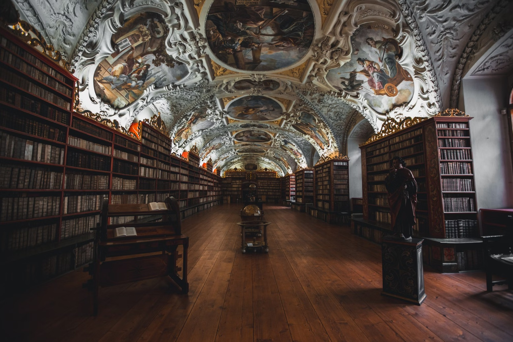

Strahov-Kloster in Prag: Bibliothek, Aussicht und der ruhige Weg zur Burg
Das Kloster oberhalb der Kleinseite ist für mich der beste Anfang für einen Tag auf dem Burgberg. Hier steht, was Sie in der berühmten Bibliothek tatsächlich sehen, wann es dort ruhig ist und wie Sie Strahov mit Burg und Petřín zu einem Weg bergab verbinden.


Die meisten Gäste, die ich über den Burgberg führe, kennen Strahov nur vom Foto: ein Saal voller Bücher, Fresken an der Decke, Globen in der Mitte. Dass dazu ein Klosterhof mit Basilika, eine eigene Brauerei und einer der schönsten Blicke über Prag gehören, wissen die wenigsten. Und weil die großen Gruppen meist unten an der Burg anfangen, ist es hier oben am Vormittag oft erstaunlich still.
Ich beginne Touren gern hier, weil der Weg danach nur noch bergab führt: erst zur Burg, dann durch die Kleinseite zur Karlsbrücke. Wer andersherum geht, steigt die steilste Strecke des Tages am Nachmittag hinauf.
In diesem Artikel
Geschichte in Kürze
Gegründet wurde Strahov 1143 von Herzog Vladislav II. und Bischof Jindřich Zdík für den Prämonstratenserorden. Es ist damit eines der ältesten Klöster in Böhmen. Brände, Plünderungen und Kriege haben die romanischen Bauten weitgehend zerstört, was Sie heute sehen, ist überwiegend Barock des 17. und 18. Jahrhunderts.
1627 brachten die Mönche die Gebeine ihres Ordensgründers, des heiligen Norbert, aus Magdeburg nach Prag. Nach 1950 löste das kommunistische Regime das Kloster auf, die Bibliothek wurde Teil des Museums für tschechische Literatur. Seit 1990 leben wieder Prämonstratenser hier, und sie verwalten Bibliothek, Gemäldegalerie und Basilika selbst.
Die Bibliothek: zwei Säle, ein Flur voller Kuriositäten
Der Theologische Saal ist der ältere der beiden, ein langer, niedriger Raum mit weißem Stuck und Deckenfresken in kleinen Feldern. In der Mitte stehen Globen aus dem 17. Jahrhundert. Der Philosophische Saal entstand Ende des 18. Jahrhunderts und ist fast doppelt so hoch: Nussbaumregale über zwei Etagen und ein einziges großes Deckenfresko von Franz Anton Maulbertsch über die geistige Entwicklung der Menschheit.
Wichtig, damit Sie nicht enttäuscht sind: Beide Säle sehen Sie von der Tür aus, hinter einer Absperrung. Das schützt die Bücher vor Feuchtigkeit und Abrieb. Betreten können Sie die Säle nur bei Sonderführungen, die vorher beim Kloster angemeldet werden. Der Blick von der Schwelle ist trotzdem eindrucksvoll, vor allem in den Philosophischen Saal.
Zwischen den Sälen liegt ein Flur, den viele zu schnell durchqueren. Dort steht das Kuriositätenkabinett: präparierte Meerestiere, Mineralien, alte Bücher mit Holzeinbänden. Meine Gäste bleiben hier oft länger als vor den Sälen, besonders Kinder.
Basilika, Galerie und Klosterbrauerei
Die Basilika Mariä Himmelfahrt steht mitten im Klosterhof. Hier liegen die Reliquien des heiligen Norbert, und auf der Orgel soll Mozart 1787 bei seinem Prag-Besuch improvisiert haben. Ins Innere kommen Sie meist nur bis zum Gitter am Eingang, außer zu Gottesdiensten und Konzerten.
Die Strahover Gemäldegalerie im Kreuzgang zeigt gotische Tafelbilder und Barockmalerei aus dem Besitz des Ordens. Sie hat ein eigenes Ticket und ist an den meisten Tagen fast leer, ein guter Ort, wenn es draußen regnet.
Gleich am Eingang des Hofs liegt die Klosterbrauerei Strahov. Gebraut wird dort seit dem 13. Jahrhundert mit Unterbrechungen, heute wieder direkt im Haus, das Bier heißt nach dem heiligen Norbert. Für eine Pause vor dem Weg bergab ist das mein Standardvorschlag, mittags sollten Sie aber mit Wartezeit rechnen.
Aussicht und zwei Wege bergab
Unterhalb des Klosters liegen Obstgarten und Weinberg. Vom Weg an der Gartenmauer sehen Sie über die Dächer der Kleinseite bis zur Altstadt, mit den Türmen der Teynkirche und dem Veitsdom links daneben. Der Garten ist frei zugänglich und an klaren Tagen am späten Nachmittag am schönsten.
Wer die stilleren Ecken der Kleinseite sucht, findet unten die Gärten der Kleinseite und den Waldstein-Garten mit der Tropfsteinwand.
Praktisches für Ihren Besuch
Häufige Fragen
Kann man in die Bibliothekssäle hineingehen?
Bei einem normalen Besuch nicht. Sie sehen beide Säle von der Tür aus. Betreten werden sie nur bei Sonderführungen, die beim Kloster vorab angemeldet werden müssen.
Lohnt sich Strahov, wenn ich nur einen Tag in Prag habe?
Ja, wenn Sie ohnehin zur Burg gehen. Mit der Tram hinauf, eine halbe Stunde Bibliothek, dann bergab zur Burg kostet Sie kaum zusätzliche Zeit.
Darf man in der Bibliothek fotografieren?
Ja, gegen eine Fotogebühr an der Kasse. Blitz und Stative sind nicht erlaubt.
Wie weit ist es von Strahov zur Prager Burg?
Etwa 15 Minuten zu Fuß, leicht bergab, über Loreto und den Hradschiner Platz.
Ist Strahov mit Kindern interessant?
Das Kuriositätenkabinett mit Meerestieren und Mineralien gefällt Kindern meist mehr als die Säle. Danach ist der Garten zum Auslaufen gut.
Weiterlesen
Offizielle Seiten für aktuelle Angaben
- Královská kanonie premonstrátů na Strahově: Öffnungszeiten, Tickets, Sonderführungen
- Dopravní podnik hl. m. Prahy: Tram 22 und 23
- Prague City Tourism: prague.eu